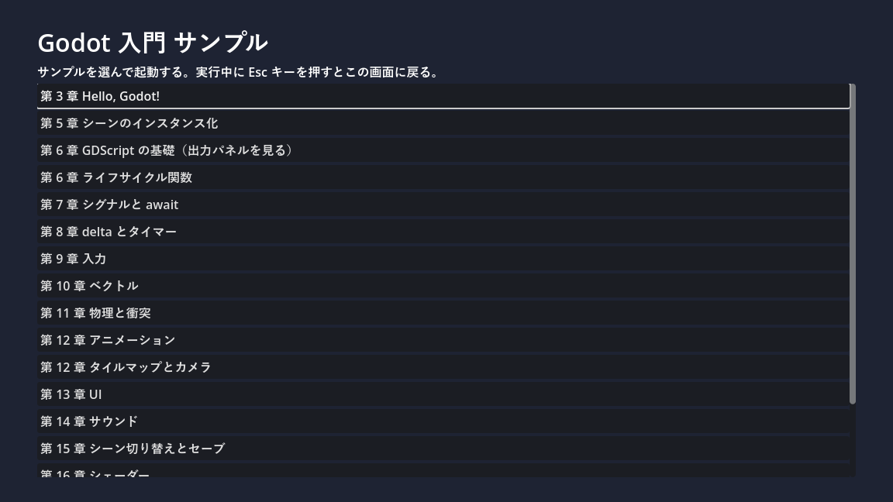

第 1 章 はじめに
本章では、本書の目的と対象読者、構成、表記の決まり、サンプルコードの使い方を説明する。
本書の目的
Godot（ゴドー）は、2D と 3D のゲームを作れるオープンソースのゲームエンジンである。軽量で起動が速く、インストール不要の実行ファイル 1 つで動く。ライセンスは MIT ライセンスで、作ったゲームの売上に対する使用料もかからない。
本書の目的は、ゲーム制作が初めての読者が Godot の基本的な考え方を理解し、小さな 2D ゲームを自力で完成させられるようになることである。そのために、次の 3 点を重視する。
ゲーム特有の考え方を説明する：ゲームループ、フレーム、物理演算、座標系など、業務システムの開発ではあまりなじみのない概念を、なぜ必要なのかから説明する。
Python の知識を活かす：Godot の主要なスクリプト言語である GDScript は、Python によく似た文法を持つ。似ている点と違う点を対比しながら説明する。
動くサンプルで確かめる：各章の内容は、そのまま実行できるサンプルプロジェクトで確認できる。
対象読者と前提知識
本書は次のような読者を想定している。
Python などのプログラミング言語で、関数やクラスを使ったプログラムを書いた経験がある。
ゲーム制作の経験はない。ゲームエンジンを使ったこともない。
高校程度の数学（ベクトル、三角関数）を、聞いたことはある。
ベクトルや三角関数は、必要になった時点で使い方を中心に説明する。数学の深い知識は必要ない。
本書の構成
本書は 4 つの部と付録で構成する。
部 |
章 |
内容 |
|---|---|---|
第 I 部 準備 |
第 1 章 ～ 第 4 章 |
Godot の概要、環境構築、エディターの画面構成を説明する。 |
第 II 部 基本概念 |
第 5 章 ～ 第 8 章 |
ノードとシーン、GDScript、ゲームループという Godot の中心となる考え方を学ぶ。 |
第 III 部 ゲームの構成要素 |
第 9 章 ～ 第 15 章 |
入力、座標とベクトル、物理、描画とアニメーション、UI、サウンド、シーン管理とデータ保存を順に学ぶ。 |
第 IV 部 実践と発展 |
第 16 章 ～ 第 21 章 |
シェーダーを学んだあと、それまでの知識を使って 1 本のゲームを完成させる。続いてデバッグ、エクスポート、3D の入り口、次に学ぶべきことを紹介する。 |
付録 |
付録 A ～ 付録 E |
用語集、ショートカットキー一覧、トラブルシューティング、参考文献、サンプルファイル一覧 |
第 II 部までは順番に読むことを勧める。第 III 部の各章は比較的独立しているので、必要な章から読んでもよい。第 17 章のチュートリアルは第 III 部までの内容を前提とする。
動作環境
本書の内容は、次の環境で動作を確認している。
項目 |
内容 |
|---|---|
OS |
Windows 11 |
Godot |
Godot 4.7.2（標準版。.NET 版ではない） |
レンダラー |
互換性（Compatibility）。理由は 第 3 章 環境構築 で説明する。 |
Godot 4 系は、マイナーバージョン（4.6、4.7 など）の間でも機能の追加や名前の変更がある。異なるバージョンを使う場合は、エディターの表示やプロパティ名が本書と異なることがある。Godot 3 系とは互換性がなく、本書の内容はそのままでは使えない。
表記の決まり
本書では次のように表記する。
表記 |
意味 |
|---|---|
「インスペクター」 |
エディターの画面上の名前（ドック、メニュー、ボタンなど）。Godot エディターを日本語で表示したときの名前を使い、必要に応じて英語の名前を括弧内に添える。 |
「位置（position）」 |
インスペクターに表示されるプロパティの名前。括弧内はスクリプトから参照するときの名前である。 |
|
コード中の識別子、ファイル名、入力する文字列 |
Ctrl + S |
キーボードのキー。Ctrl を押しながら S を押すことを表す。 |
「シーン」→「新規シーン」 |
メニューを順にたどる操作 |
Godot エディターの表示言語は、既定では OS の言語設定に従う。Windows を日本語で使っていれば、エディターも日本語で表示される。英語で表示したい場合の切り替え方は 第 3 章 環境構築 で説明する。
サンプルコード
本書のサンプルは、1 つの Godot プロジェクトにまとめている。次のリンクから zip ファイルをダウンロードできる。
zip ファイルを展開すると、godot_introduction_examples フォルダーができる。第 3 章 環境構築 の手順で Godot をインストールしたあと、プロジェクトマネージャーの「インポート」でこのフォルダー内の project.godot を選ぶと、プロジェクトとして開ける。
プロジェクトを実行（F5）すると、サンプルの一覧（ランチャー）が表示される。ボタンを押すとそのサンプルが起動し、実行中に Esc キーを押すと一覧に戻る。


図 1 サンプルの一覧（ランチャー）
サンプルプロジェクトのフォルダー構成は次のとおりである。
フォルダー・ファイル |
内容 |
|---|---|
|
プロジェクトの設定ファイル。入力アクションやオートロードの設定を含む。 |
|
サンプルの一覧を表示するランチャー |
|
各章のサンプル。フォルダー名の数字が章番号に対応する。 |
|
画像と効果音。すべて |
|
素材を生成する Python スクリプト |
|
サンプルコードを検査するツールの設定ファイル（後述） |
各ファイルを個別に閲覧・ダウンロードするには、付録 E サンプルファイル一覧 を使う。
本文中のコードには行番号を付けている。行番号はコードの一部ではないので、入力する必要はない。
サンプルコードの検査
サンプルの GDScript は、Godot 公式の GDScript スタイルガイドに沿って書いている。また、次の方法で検査している。
すべての変数、引数、戻り値に型を指定する。型の指定漏れはエディターが警告する設定にしている（第 7 章 GDScript の応用 を参照）。
GDScript の静的解析ツール gdtoolkit（
gdlintとgdformat）で、命名規則や書式に違反がないことを確認する。設定はgdlintrcとgdformatrcに書いており、1 行の長さの上限は 120 文字とした。Python のスクリプト（
tools/generate_assets.py）は、flake8 と mypy（strict = True）で検査する。設定はsetup.cfgに書いている。
gdtoolkit は Python のパッケージとして提供されている。自分で検査する場合は、サンプルプロジェクトのフォルダーで次のコマンドを実行する。
1pip install "gdtoolkit==4.*" flake8 mypy pillow
2gdlint .
3gdformat --check .
4flake8
5mypy tools